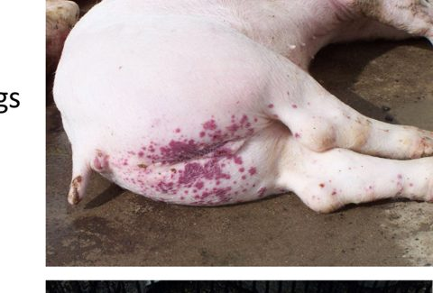
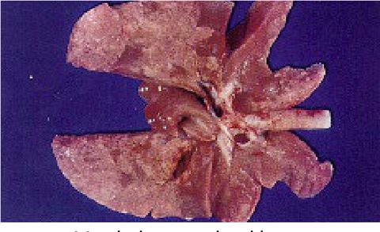
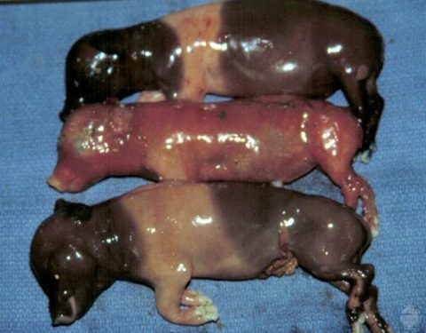
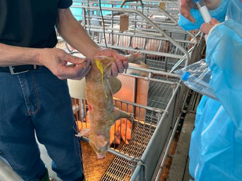
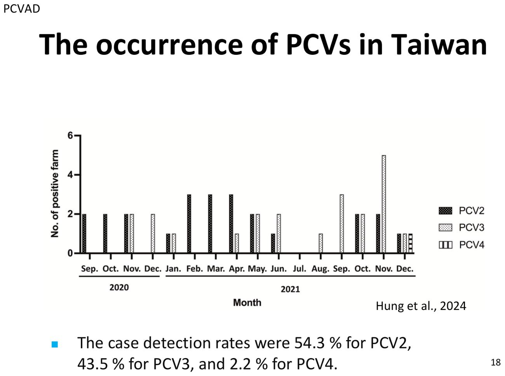
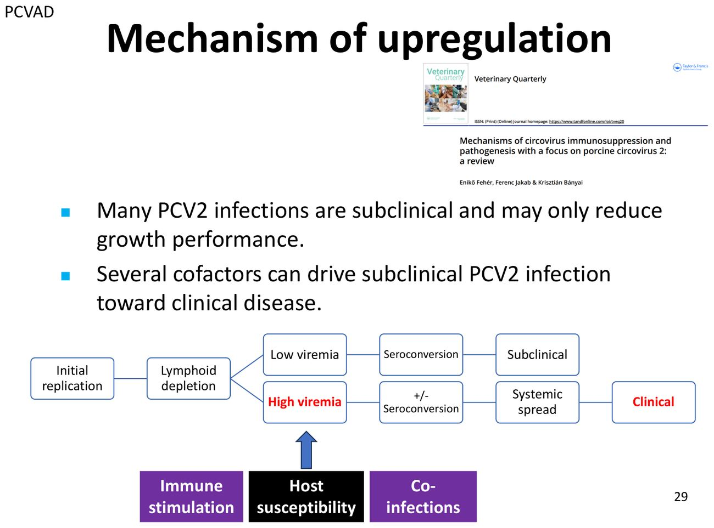
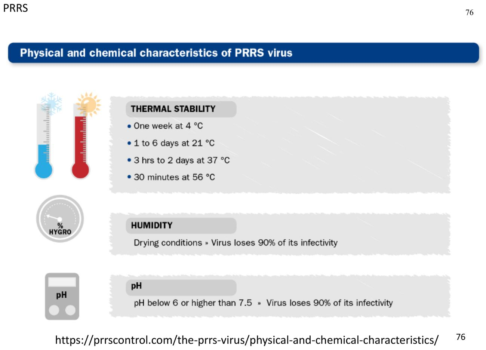

大方向與重點摘要
- 這章在講什麼
- 四個全球普遍存在（endemic）的豬病毒：豬環狀病毒相關疾病（Porcine circovirus-associated disease, PCVAD）、豬生殖與呼吸綜合症（Porcine reproductive and respiratory syndrome, PRRS）、豬小病毒感染症（Porcine parvovirus, PPV）、豬輪狀病毒感染症（Porcine rotavirus, RV），最後一段是豬用疫苗的原則。
- 為什麼重要
- PCV2 被視為全球養豬業最重要的病原之一；PRRS 在美國每年造成約 12 億美元損失。這幾個病的共同主題是「感染很普遍，但不是每頭都發病」：混合感染、年齡、母源免疫、管理決定了會不會變成臨床病。
- 這章要抓的重點
-
- PCV 四型：PCV1 不致病（PK-15 細胞污染物）、PCV2 最重要（2a→2b→2d 兩次基因型轉換）、PCV3 與蝙蝠環狀病毒相關、PCV4 與水貂環狀病毒相關；ORF2 衣殼蛋白是次單位疫苗抗原。
- PCVAD 病型：PCV2-SD（PMWS，消耗、淋巴耗竭）、PCV2-RD、PDNS（8–18 週齡、後肢會陰紅紫色斑、腎腫大蒼白）、亞臨床；PCV2-SD 是多因子疾病。
- PCVAD 診斷：PCV2-SD 三條件（臨床＋淋巴組織病變＋病灶內大量 PCV2）；PDNS 診斷不需要驗到 PCV2；PCR 陽性不等於 PCVAD。
- PRRSV：Arteriviridae、有封套 (+)ssRNA；GP5、M、N 三大結構蛋白；PRRSV-1（歐洲）、PRRSV-2（美洲、亞洲、台灣）；2006 年中國 HP-PRRS。
- PRRS 致病與免疫：標的細胞是巨噬細胞（PAMs）；非中和抗體（N 蛋白）7–14 天就出現，中和抗體（GP5）3–4 週才出現；持續感染、準種（quasispecies）、演化速度 10⁻² substitutions/site/year。
- PPV1 的 SMEDI：35 天前胚胎死亡吸收、35–70 天胎兒死亡木乃伊化、70 天後胎兒有免疫力；同一窩有正常仔豬與大小不一的木乃伊胎高度懷疑 PPV1。
- 輪狀病毒：分段 dsRNA、無封套；G＝VP7、P＝VP4；空腸迴腸絨毛萎縮；RVA 最普遍、人畜共通潛力最大、商業疫苗只有 RVA；保護靠乳汁 IgA。
- 容易混淆
-
- PCV2 是單股環狀 DNA；PPV 是單股線狀 DNA；PRRSV 是單股正股 RNA（有封套）；輪狀病毒是分段雙股 RNA。
- PRRS 早期抗體沒有中和力：ELISA 陽性不代表有保護。
- PCV2 疫苗不保護 PCV3、PCV4；PRRS 疫苗對異源株保護不完全；PPV 不活化疫苗擋住疾病但不一定擋住感染。
- 輪狀病毒 IgG 主要來自初乳、IgA 持續來自乳汁。
四個病的主線必考
| 疾病 | 病原 | 主要受害 | 一句話特徵 | 代表圖 |
|---|---|---|---|---|
| PCVAD | PCV2（Circoviridae，ssDNA 環狀，無封套） | 離乳後豬 | 消耗、淋巴耗竭；PDNS 後肢會陰紅紫色斑 |  PDNS 皮膚病灶（p.35） |
| PRRS（藍耳病） | PRRSV（Arteriviridae，(+)ssRNA，有封套） | 母豬生殖、仔豬呼吸 | 流產死產、呼吸困難、斑駁不塌陷的肺；持續感染 |  斑駁、黃褐與紅色的肺（p.89） |
| 豬小病毒感染症 | PPV1（Parvoviridae，ssDNA 線狀，無封套） | 懷孕女豬、年輕母豬 | SMEDI；同窩大小不一的木乃伊胎 |  木乃伊胎（p.129） |
| 豬輪狀病毒感染症 | RV（Sedoreoviridae，分段 dsRNA，無封套） | 新生與哺乳仔豬 | 黃色水樣下痢、空腸迴腸絨毛萎縮 |  下痢仔豬（p.160） |
內容以老師講義為主，章節順序跟講義一致。標「補充」的是講義以外的延伸，標「推測」的是個人推論。這份講義沒有附國考題。學長姐筆記提到張家宜老師的題目常出在講義畫底線的地方，所以本頁把講義有底線的內容標為「必考」並加粗。點任何「p.N」可在右側開啟講義對照。
PCVAD：病毒、基因型與流行病學 Porcine Circovirus
PCV2 被視為全球養豬業最重要的病原之一。「豬環狀病毒疾病（porcine circovirus diseases, PCVDs）」是把與 PCV2 有關的疾病歸成一組的名稱；北美稱為「豬環狀病毒相關疾病（PCVAD）」。
PCVAD 的四種臨床表現必考
- PCV2 全身性疾病（PCV2 systemic disease, PCV2-SD）：即離乳後多系統消耗症候群（postweaning multisystemic wasting syndrome, PMWS）。
- PCV2 生殖疾病（PCV2 reproductive disease, PCV2-RD）。
- 豬皮膚炎腎病症候群（Porcine dermatitis and nephropathy syndrome, PDNS）。
- PCV2 亞臨床感染（PCV2 subclinical infection, PCV2-SI）。
四型 PCV必考
| 型 | 發現 | 重點 |
|---|---|---|
| PCV1 | 1974 年 | 最初是 PK-15 細胞的污染物；分布廣；對豬不致病（只有實驗條件下報告過有限的致病性）；分離株間遺傳多樣性很低 |
| PCV2 | 1991 年（加拿大首次認識 PMWS） | 回溯可在 1962 年的樣本驗到 PCV2 DNA；全球分布；主要基因型 PCV2a、2b、2d |
| PCV3 | 2016 年（美國） | 回溯至少 1990 年代初就在流行；全球分布；演化上與蝙蝠相關的環狀病毒有關；臨床表現多樣 |
| PCV4 | 2019 年（中國；抗體最早可追到 2008 年） | 在亞洲、歐洲、美國都有檢出；與水貂環狀病毒的親緣比其他 PCV 近 |
病毒特性必考
- Circoviridae 科 Circovirus 屬；無封套，直徑 12–23 nm；核衣殼為二十面體對稱。
- PCV2 含 1.7 kb 單股環狀 DNA（single-stranded circular DNA）。
- ORF2 編碼的衣殼蛋白是主要的親緣與流行病學標記，也是次單位疫苗的標的抗原。（補充：ORF1 編碼複製酶 Rep。）
病毒不活化必考
| 條件 | PCV 的表現 |
|---|---|
| 低溫 | 穩定；從 −70°C 保存的組織很容易分離到 |
| 高溫 | 穩定：56°C 1 小時、75°C 15 分鐘都不會被不活化；濕熱比乾熱有效 |
| 低 pH | 穩定：pH < 2 仍有活性 |
| 消毒劑 | 對大多數消毒劑有抵抗力；氧化劑、醛類－四級銨複方效果最好 |
56°C 1 小時是很多有封套病毒會被殺掉的條件，PCV2 卻撐得住；pH < 2 相當於胃酸。也就是說 PCV2 小、無封套、超級耐，環境中很難清除，清消要選對消毒劑（補充）。
PCV2 基因型轉換（genotype shift）必考
- 全球至少已鑑定 9 個 PCV2 基因型（2a–2i）；2a、2b、2d 全球分布，其他只零星出現。
- 第一次轉換 2a → 2b：PCV2a 原本在發病豬最普遍；2003 年後 2b 成為主流，並伴隨更嚴重的臨床爆發。
- 第二次轉換 2b → 2d：2012 年後全球轉為 2d，部分疫苗失敗病例中驗到。
- 同型或不同型的 PCV2 可共同感染同一頭豬。
- 各 PCV2 株之間沒有重大抗原差異；儘管有遺傳與少量抗原變異，PCV2 一般被視為單一血清型。
流行病學與台灣理解

PCVAD：傳播、致病、臨床與病變 Transmission, Pathogenesis, Clinical Signs & Lesions
PCV2 感染很普遍，但只有一部分豬會發病。講義的重點是：PCV2 是必要原因，但不是充分原因，需要其他因子把亞臨床感染推向臨床疾病。
傳播必考
- 主要經口鼻途徑（oronasal），經受感染的分泌物與排泄物傳播。
- 感染後豬可帶毒數週。
- PCV2 可通過胎盤（placenta），仔豬可在子宮內被母豬感染。
- 仔豬也可經乳汁與初乳（milk and colostrum）吃到病毒。
- 公豬會經精液（semen）排毒。
致病機制必考
- PCV2-SD 的特徵是免疫系統嚴重受損，臨床症狀與病變常是不同器官中共同感染病原的加成效果。
- PCV2-SD 是多因子疾病（multifactorial disease），PCV2 感染是必要原因。
- PCV2a、2b、2d 都被認為有致病性，都可造成 PCV2-SD。
- 豬感染 PCV2 後有長短不一的病毒血症，在淋巴器官與肺的巨噬細胞、單核球中複製與持續最廣。
- 多處淋巴耗竭（lymphoid depletion）、慢性淋巴組織球性到肉芽腫性炎症。
- PDNS：豬可出現斑塊狀紫色皮膚病灶與腎病。

同樣感染 PCV2，大多數豬只有低病毒血症、產生抗體就結束（亞臨床，只是長得比較慢）。如果同時有免疫刺激（例如打疫苗、其他感染）、宿主較易感或共同感染，就會變成高病毒血症、全身散播，出現臨床 PCVAD（p.29）。
臨床症狀必考
| 病型 | 症狀 |
|---|---|
| PCVAD（總體） | 消耗（wasting）、生長不良、被毛粗、呼吸急促、呼吸困難、蒼白、下痢、偶有黃疸；發病豬通常會死 |
| PCV2-SD | 消耗、體重減輕、皮膚蒼白、呼吸窘迫、下痢、黃疸 |
| PCV2 肺病／腸病 | 呼吸窘迫、呼吸困難／下痢 |
| PCV2-RD | 流產或木乃伊化（SMEDI：死產、木乃伊化、胚胎死亡、不孕）；規律返情（regular return-to-estrus）；血清轉陽 |
| PDNS | 主要在 8–18 週齡；皮膚出現紅紫色斑塊（red-purple blotches），有時略隆起，後肢與會陰最明顯，可擴及腹部，最後遍布全身；大多數最後會死 |
肉眼與顯微病變必考
- 肺：瀰漫性紅褐色、不塌陷、橡膠樣，有不同程度的前腹側實質化。
- 淋巴結：瀰漫性腫大。
- 較少見：黃疸、胃潰瘍、皮膚病灶（PDNS）、腎腫大、肝腫脹或萎縮。
- 肉眼病變很少有診斷性，跟 PRRS 很像。
- 顯微：肺為淋巴組織球性、增生性間質性肺炎，細支氣管周圍與中隔纖維增生；淋巴組織：淋巴耗竭、濾泡被巨噬細胞取代、細胞質內包涵體；肝細胞壞死與淋巴漿細胞性炎症；腎淋巴漿細胞性間質性腎炎。
與其他病原共同感染理解
- PPV：PCV2 與 PPV1 共同感染的豬，6–7% 發生 PCVAD。
- Mycoplasma hyopneumoniae：共同感染的豬 10% 發生 PCVAD。
- PRRSV：共同感染會提高 PCV2 病毒血症與疾病表現。
- PCV2 感染會降低古典豬瘟（CSFV）減毒疫苗的效果。
PCVAD：診斷、免疫與控制 Diagnosis, Immunity & Control
PCVAD 的診斷關鍵是「病毒要在病灶裡」：PCV2 太普遍，單驗到病毒不能說是 PCVAD。
PCVAD 診斷概要必考
- 臨床症狀：消耗症候群、高死亡率。
- 組織病理：非化膿性間質性肺炎、多灶到瀰漫性淋巴耗竭。
- 病毒學：PCV2 陽性。
- 共同感染：PRRSV、SIV、Strep. suis、M. hyopneumoniae。
各病型的診斷條件必考
| 病型 | 條件 |
|---|---|
| PCV2-SD（三條件都要） | ① 生長遲緩與消耗，常有呼吸困難與鼠蹊淋巴結腫大，偶有黃疸 ② 淋巴組織有中至重度特徵性組織病變 ③ 病灶的淋巴與其他組織內有中至大量 PCV2 |
| PCV2-RD 懷孕後期（三條件） | ① 晚期流產與死產，有時胎兒心臟明顯肥大 ② 心臟病變為廣泛的纖維化和／或壞死性心肌炎 ③ 心肌病灶與其他胎兒組織有大量 PCV2 |
| PCV2-RD 懷孕早期（推定，兩條件） | ① 規律返情 ② 返情後 PCV2 血清轉陽，和／或返情前後 PCV2 PCR 陽性 |
| PDNS（兩條件） | 驗到 PCV2 不是必要條件。 ① 出血壞死性皮膚病灶（主要在後肢與會陰），和／或腫大蒼白的腎臟伴瀰漫性皮質點狀出血 ② 全身性壞死性血管炎與壞死性纖維素性腎絲球腎炎 |
PDNS 被歸在 PCVAD 底下，但它的診斷不需要驗到 PCV2，看的是皮膚與腎臟的血管炎病變（p.50）。反過來，PCV2-SD 則一定要在病灶裡驗到中到大量 PCV2。
診斷樣本必考
| 樣本 | 用途 |
|---|---|
| 血清 | qPCR 與血清學 |
| 淋巴結、扁桃腺、脾、肺 | 組織病理、IHC／ISH、qPCR |
| 其他受影響組織 | 依臨床症狀 |
| 口腔液（oral fluid） | 群體層級監測 |
單獨 PCR 陽性不能確認 PCV2 相關疾病（p.51）。
鑑別診斷必考
| 疾病 | 重疊的表現 |
|---|---|
| PRRS | 生殖障礙、消耗、呼吸困難 |
| 豬流感 | 呼吸道疾病 |
| CSF／ASF | 腎出血與全身性病變 |
| 豬丹毒 | 皮膚病灶與生殖障礙 |
PCV2 免疫必考
- PCV2 感染可造成明顯的免疫失調，PCVAD 豬特別明顯；與循環中 B、T 細胞數量及淋巴器官淋巴球減少高度相關。
- 7–14 天：IFA 可驗到抗體。
- 21–35 天：低效價的中和抗體才驗得到。
控制與疫苗必考
- 控制方法：疫苗、控制其他病原、管理與營養改變、遺傳改變、清場再引種。
- 商業 PCV2 疫苗自 2006 年上市，PCVAD（包括亞臨床）的經濟損失大幅下降。
- 母豬與仔豬都接種有助持續控制 PCVAD；PCV2 是重要的共同感染因子，接種也有助控制多病原混合感染的臨床病。
- 大多數商業疫苗以 PCV2a 為基礎；PCV2a 與 PCV2b 疫苗都能降低 PCV2d 病毒血症與病變。
- 因 PCV2 基因型多樣，建議以同源株（homologous strain）為疫苗株；不同基因型間的交叉保護有限，抗原差異會明顯影響中和抗體效價。
- PCV2 疫苗不預期能保護 PCV3 或 PCV4。
人畜共通潛力看過
- PCV2：在多種非豬物種、甚至昆蟲中驗到；沒有確認的人類感染。
- PCV3：在多種動物中驗到，可能跨物種傳播；人類感染未確認。
- PCV2 感染很普遍，但只有一部分感染豬會發展成臨床病。
- PCV2-SD 是多因子疾病，診斷需要相符的臨床症狀、特徵病變，以及病灶內的 PCV2。
- 疫苗大幅降低 PCV2 相關疾病與生產損失，但仍可能感染。
- PCV2 是確立的主要豬病原，PCV3、PCV4 的臨床角色仍在釐清。
讀書補充Note - PCV2、PCVAD、PCV2-SD、PDNS 分別是什麼？為什麼 PDNS 診斷不用驗到 PCV2？
先講結論
PCV2 是病毒，PCVAD 是它引起的疾病總稱，PCV2-SD 和 PDNS 是總稱底下的兩種病。PCV2-SD 的病變是病毒直接造成的，所以診斷要在病灶裡驗到中到大量病毒；PDNS 的診斷只看皮膚與腎臟的血管炎病變，不要求驗到 PCV2（講義 p.50）。講義只寫診斷條件，PDNS 的免疫複合體機轉是補充。
1. 四個名稱的關係
- PCV2（Porcine circovirus type 2，豬環狀病毒第 2 型）
- 病原，環狀病毒科的單股環狀 DNA 病毒（補充：構造簡單，是最小的動物病毒之一）。
- 豬場很普遍，很多豬帶著它也不發病，所以講義說 PCR 陽性不能單獨確認 PCV2 相關疾病（p.51）。
- PCVAD（Porcine circovirus-associated diseases，豬環狀病毒相關疾病）
- 傘狀名稱，包含 PCV2-SD、PCV2-RD（繁殖障礙）、PDNS 等。
- PCV2-SD（PCV2 systemic disease，全身性疾病），舊名 PMWS（離乳後多系統消耗症候群）
- PDNS（Porcine dermatitis and nephropathy syndrome，豬皮膚炎腎病症候群）
- 後肢與會陰的出血壞死性皮膚病灶；腎臟腫大蒼白、皮質瀰漫性點狀出血。
- 組織病理是全身性壞死性血管炎＋壞死性纖維素性腎絲球腎炎。
2. 為什麼 PCV2-SD 一定要驗到病毒
- 三個條件要對得上（講義 p.47）
- 臨床症狀：消瘦等。
- 組織病變：淋巴組織中到重度病變。
- 病灶內有中到大量 PCV2。
- 原因
- PCV2 太普遍，只驗到「有病毒」沒有意義。
- 病變是病毒在淋巴組織大量複製、耗竭淋巴細胞造成的，所以「病灶裡病毒多」本身就是因果證據（推論）。
3. 為什麼 PDNS 不用驗到 PCV2（補充：一般認為的機轉）
- 免疫複合體（第 III 型過敏反應）
- 豬感染 PCV2 後產生抗體，抗體與病毒抗原結合成免疫複合體。
- 複合體沉積在小血管壁與腎絲球，活化補體、吸引嗜中性球，造成發炎壞死。
- 血管壁 → 壞死性血管炎 → 皮膚出血壞死斑；腎絲球 → 腎絲球腎炎 → 腎腫大蒼白、點狀出血。
- 所以診斷改看病變
- 傷害來自免疫反應，病變出現時病灶裡的病毒可能已經很少甚至驗不到。
- 要求「病灶有大量病毒」會漏掉真正的 PDNS，因此講義改用「皮膚／腎臟病變＋血管炎與腎絲球腎炎」兩個條件。
- 為什麼還歸在 PCVAD 底下
- PDNS 和 PCV2 在流行病學上高度相關，PCV2 被認為是主要觸發因子；只是診斷時不必證明病毒在場。
| PCV2 | PCV2-SD（PMWS） | PDNS | |
|---|---|---|---|
| 是什麼 | 病毒 | 疾病 | 疾病 |
| 主要表現 | 多數無症狀 | 消瘦、呼吸困難、淋巴結腫大 | 皮膚出血壞死、腎腫大 |
| 病變來源 | — | 病毒直接傷害（推論） | 免疫複合體（補充） |
| 診斷要不要驗病毒 | — | 要，病灶內中到大量 | 不用 |
4. 國考怎麼考，要背到什麼程度
- 一定要會（國考題庫出過）
- PDNS 的病原是環狀病毒（106 年第二次第 15 題）。
- 保育豬的 PMWS 與 PDNS 是第二型環狀病毒感染（98 年第一次第 24 題）。
- PCVAD 包括離乳後多系統消耗症候群、皮膚炎腎病症候群、繁殖障礙，不含藍耳病（111 年第二次第 11 題）。
- 注意：「PDNS 診斷不需驗到 PCV2」不等於「PDNS 和 PCV2 無關」，問病因時答案就是 PCV2。
- 懂原理就好
- PCV2-SD 三條件、PDNS 兩條件的差別，以及「PCR 陽性不等於發病」。
- PDNS 是免疫複合體血管炎（補充）。
- 鑑別診斷（講義 p.52）
- 腎臟出血與全身病變要想到 CSF／ASF；皮膚病灶要想到豬丹毒。
PRRS：病毒、分型與傳播 PRRSV & Transmission
豬生殖與呼吸綜合症（PRRS），又稱藍耳病（blue ear disease）或神祕豬病（mystery swine disease）。1987 年美國首次認識，1991 年在荷蘭鑑定出病毒。症狀包括生殖障礙、肺炎、對次發細菌感染的易感性增加。
為什麼重要理解
- 多種病毒株、毒力差異大，解釋了臨床表現的廣泛。
- 北美、歐洲、亞洲最重要的豬病之一；美國每年生產損失約 12 億美元。
- 大多數主要養豬地區都有；澳洲、紐西蘭、印度仍未發生。
病毒必考
- Arteriviridae 科、Betaarterivirus 屬；有封套、單股、正股 RNA 病毒。
- 結構蛋白由 ORF2–7 編碼：ORF2–5 編碼 GP2、GP3、GP4、GP5；ORF6 編碼 M（基質）、ORF7 編碼 N（核衣殼）蛋白。
- GP5、M、N 是病毒顆粒與感染細胞裂解物中一定找得到的三個主要蛋白；GP5 是最重要的結構蛋白之一。
PRRSV-1 vs PRRSV-2必考
| PRRSV-1 | PRRSV-2 | |
|---|---|---|
| 舊稱 | genotype 1／Type 1／歐洲型 | genotype 2／Type 2／北美型 |
| ICTV 名稱 | Betaarterivirus suid 1 | Betaarterivirus suid 2 |
| 原型株 | Lelystad（約 1991 年，歐洲） | VR-2332（約 1991 年，北美） |
| 現在主要分布 | 歐洲 | 美洲與亞洲 |
| 台灣 | 2018 年底首次爆發 | 1991 年首次認識、1992 年分離；長期為主 |
- 兩種的全基因體核苷酸相似度只有約 50–70%；各自又有許多 lineage 與 sublineage。
- 高度遺傳變異影響毒力、致病性與疫苗保護；異源保護（heterologous protection）多變且常不完全。
高致病性 PRRS（HP-PRRS）必考
- 2006 年在中國出現。
- 所有年齡高燒（40–42°C）、母豬流產、哺乳仔豬／離乳豬／生長豬死亡率高。
- 發病率接近 100%、死亡率高；在亞洲東部、南部、北部爆發。
理化特性理解

補充：跟 PCV2 相比，PRRSV 有封套，怕熱、怕乾、怕酸鹼，環境中存活時間短，所以傳播主要靠活豬與精液。
傳播必考
- 主要經感染豬與易感豬的近距離接觸（close contact）。
- 病毒從唾液、鼻分泌物、尿、糞、精液排出。
- 鼻對鼻接觸與受污染排泄物很重要。
- 可經受污染精液與人工授精傳播。
- 場間傳播：移動感染豬是主要途徑；外觀正常的豬可能是帶毒者與排毒者；引進離乳豬與更新種豬是重要風險因子。
PRRS：致病、臨床、病變與免疫 Pathogenesis, Lesions & Immunity
PRRS 難纏的原因全在這一節：病毒住在巨噬細胞、抗體來得快但沒有中和力、會持續感染、而且演化得非常快。
致病機制必考
標的細胞：巨噬細胞（macrophages）
- 肺泡巨噬細胞（pulmonary alveolar macrophages, PAMs）。
- 肺血管內巨噬細胞（pulmonary intravascular macrophages, PIMs）。
- 淋巴組織與呼吸道黏膜的巨噬細胞。
- 懷孕時母胎介面的巨噬細胞。
病毒抗原與核酸以肺與淋巴結最多；心、腦、腎等組織的血管周圍與血管內巨噬細胞也驗得到。
病毒血症與持續感染必考
| 時間 | 狀態 |
|---|---|
| 12 hpi | 部分豬可驗到病毒血症 |
| 24 hpi | 大多數或全部實驗感染豬可驗到 |
| 第 1–2 週 | 病毒量最高 |
| 約 4 週 | 有感染力的病毒血症明顯下降 |
| 數個月 | 扁桃腺與其他淋巴組織持續帶毒；病毒 RNA 可長期驗到 |
持續 PCR 陽性不一定代表仍有感染力的病毒血症（p.82）。
臨床症狀必考
- 保育豬急性感染：厭食、昏睡、發紺、被毛粗、呼吸急促和／或呼吸困難，但不咳嗽；平均日增重下降程度不一，造成同批生長不均。
- 母豬生殖障礙：不孕、流產、死產；同窩有正常、虛弱、死產與木乃伊胎；虛弱仔豬常在出生後不久死於呼吸道病與次發感染。
- 幼豬呼吸道病：越小越嚴重；呼吸困難、生長差、身體發紅、藍耳。
- 皮膚：四肢末端充血或發紺；母豬很少有神經症狀。
- 生殖、呼吸、皮膚表現類似馬病毒性動脈炎（equine viral arteritis）。
病變必考
- 嚴重時肺斑駁、黃褐與紅色、不塌陷。
- 淋巴結中至重度腫大、黃褐色，部分病毒株可出血。
- 田間大多數 PRRSV 感染豬都合併一種以上病原，使單靠病理診斷 PRRS 更困難。
- 顯微：間質性肺炎。
體液免疫必考
| 抗體 | 出現時間 | 針對 | 功能 |
|---|---|---|---|
| 非中和抗體 | 7–14 天出現高效價 | 主要針對 N 蛋白 | 沒有中和能力 |
| 中和抗體 | 3–4 週才開始出現，通常效價低 | 主要針對封套醣蛋白，包括 GP5 | 有中和能力 |
- Epitope A：感染早期（14 dpi）誘發高效價反應（誘餌，沒有中和力）。
- Epitope B：感染後期（21 dpi 之後）誘發低效價但有中和能力的反應。
ELISA 驗到的多半是早期的非中和抗體，所以抗體陽性不代表有保護；真正能中和的抗體來得慢又少，病毒有足夠時間在巨噬細胞裡持續存在（補充）。
影響因子與共同感染理解
- 病毒：種、株、毒力、感染劑量。宿主：年齡、免疫狀態、易感性。管理：豬隻流動、建築設計、溫度調控。
- 共同感染：病毒（PCV2、SIV、PRCV、PRV）；細菌（HP、PM、AP、黴漿菌）。互動病原也包括 CSFV、PPV、Strep. suis。
- PRRS 感染會降低 CSFV 減毒疫苗的效果。
持續感染與演化必考
- 不顯性感染很常見；感染可延長或持續數個月；排毒可能是間歇性的。
- 持續感染豬會造成病毒循環、場內再感染與環境污染；PRRSV 很難從感染場清除。
- 即使以 RNA 病毒而言，PRRSV 演化也異常快速：約 10⁻² substitutions/site/year，比許多 RNA 病毒（10⁻³–10⁻⁵）快 1–3 個數量級。原因可能是複製更頻繁，而不是複製錯誤率比較高。
- PRRSV 以準種（quasispecies）存在：遺傳變異約 93% 在場與場之間、4% 在同場豬之間、3% 在同一頭豬內；一頭豬內可同時有多個變異株；一項研究中同一場沒有兩頭豬的序列完全相同。
- 演化的影響：疾病型態與毒力改變、細胞嗜性改變、促進持續感染、控制困難；新變異株可在已免疫的豬群中讓易感的小群體發病，持續感染的病毒可能逃脫既有免疫，造成病毒血症反彈或復發。
PRRS：診斷、控制與疫苗 Diagnosis, Control & Vaccination
PRRS 的診斷重點在「結果怎麼解讀」，控制重點在「整合」：監測、疫苗、生物安全、管理缺一不可。
鑑別診斷必考
診斷樣本必考
| 樣本 | 用途 |
|---|---|
| 血清或全血 | 急性感染，RT-PCR |
| 肺、扁桃腺、淋巴結 | 剖檢與持續感染 |
| 支氣管肺泡灌洗液（BAL） | 下呼吸道感染 |
| 精液 | 種公豬監測 |
| 口腔液 | 方便的群體監測 |
- 病原檢測：病毒分離（MARC-145 細胞）、病毒核酸檢測與定性。
- 抗體檢測：商業 ELISA、病毒中和試驗。
RT-PCR 與 ELISA 結果判讀必考
| RT-PCR | ELISA | 可能情境 |
|---|---|---|
| 陰性 | 陰性 | a) 陰性動物 b) 仍感染但沒有病毒血症的豬，或已清除感染、抗體轉陰的豬（感染後 ≥6–12 個月） |
| 陰性 | 陽性 | a) 仍感染但無病毒血症，感染發生在一段時間前（數天到數月） b) 未感染的仔豬帶有初乳抗體 c) 打過疫苗的豬 |
| 陽性 | 陰性 | a) 剛感染或剛打疫苗（<14 天），還沒血清轉陽 |
| 陽性 | 陽性 | a) 仍有病毒血症且已血清轉陽（>14 天） b) 已有前次感染或疫苗抗體的豬再感染 |
（補充）以 14 天為界：PCR 看「現在有沒有病毒」，ELISA 看「過去有沒有接觸」。PCR＋／ELISA−＝太早，抗體還沒來；PCR−／ELISA＋＝病毒血症過了，或是母源抗體、疫苗。
預防與控制必考
- 四大支柱：監測與診斷、疫苗、生物安全、管理（p.111）。
- PRRS 地方流行的國家或地區：
- 場級生物安全對防止引進新株非常重要。
- 更新女豬與公豬的 PRRSV 狀態在引進前要清楚。
- 引進動物要適當隔離與馴化（acclimatization）。
- 引進前或進隔離舍時檢測，進種豬群前再驗一次。
- 豬場發生 PRRS 時：
- 可用清場與重新引種（depopulation and repopulation）消除病毒。
- 重新進豬前要徹底清潔消毒、適當處理屍體。
- 多點生產、早期隔離離乳（segregated early weaning）、檢測淘汰（test-and-removal）也被用於控制或清除。
疫苗必考
- 商業疫苗對遺傳上同源（homologous）的病毒株一般提供良好的病毒學與臨床保護。
- 但現有疫苗不提供完全或通用的保護；對異源（heterologous）株的保護多變且常不完全。
- PRRSV 造成母豬重大生殖障礙與生長豬呼吸道病。
- 持續感染與間歇排毒讓病毒在豬群中長期循環。
- PRRSV 演化快、以準種存在，遺傳與抗原多樣性大。
- 診斷需要正確解讀病毒學與血清學結果。
- 疫苗減少臨床病與病毒複製，但對所有株沒有完整交叉保護。
- 有效控制需要整合監測、疫苗、生物安全與豬群管理。
豬小病毒感染症 Porcine Parvovirus Infection
豬小病毒第 1 型（Porcine parvovirus type 1, PPV1）是豬生殖障礙（reproductive failure）的重要感染原因，1965 年首次鑑定。造成死產、木乃伊化、胚胎死亡、不孕（SMEDI）。近年在不同國家又鑑定出 PPV2–PPV8，盛行率依型別、年齡層、地區與研究族群而異。
病毒與不活化必考
- PPV1–8 屬 Parvoviridae 科；顆粒小，約 20–30 nm，無封套；線狀單股 DNA，約 4–6 kb。
- 對環境抵抗力很強、相對耐熱：可撐過短暫 90°C 乾熱；濕熱一般比乾熱有效。
- 有效消毒劑：過氧乙酸（peracetic acid）、醛類、次氯酸鈉（sodium hypochlorite）。
流行病學與傳播必考
- PPV1 在全世界豬群地方性流行（endemic）；PPV2–PPV7 在多個地區驗到（PPV2 首見於緬甸、PPV3 香港、PPV4 與 PPV5 美國、PPV6 中國、PPV7 美國；PPV8 首見於中國、之後在歐洲）。
- PPV1 可在所有年齡易感豬複製，但臨床病主要表現在懷孕母豬的生殖障礙。
- 感染豬從糞便與其他分泌物排毒；PPV1 可在環境與污染器具上保持感染力數個月。
- 場間經污染物（衣物、靴子、器具）傳播；齧齒類可能機械性傳播；感染公豬可從精液排毒。
致病機制必考
- 在淋巴組織初期複製後，經無細胞性病毒血症（cell-free viremia）全身散播。
- 多種組織器官都驗得到，但偏好在快速分裂的細胞複製，而非特定單一組織。
- 生殖疾病來自 PPV1 感染胚胎或胎兒的能力。到達胎兒的途徑：母體血液或淋巴中的游離病毒、逐層跨胎盤細胞複製、感染的免疫細胞（巨噬細胞、淋巴球）。
- 與其他病毒共同感染：PCV2＋PPV1 可加重 PCV2 相關疾病與病變，但 PPV1 共同感染不是 PCV2 相關疾病發生的必要條件。PPV2–PPV8 的致病意義仍不清楚。
臨床：依懷孕階段必考
生殖障礙是 PPV1 唯一確立的主要臨床後果；已免疫豬群損失通常低，但易感、未免疫豬群可很嚴重。
| 感染時的懷孕天數 | 結果 |
|---|---|
| 很早期 | 胚胎受透明帶（zona pellucida）保護 |
| 第 35 天前 | 胚胎死亡與吸收（→ 返情、窩仔數少） |
| 第 35–70 天 | 胎兒死亡與木乃伊化 |
| 約第 70 天 | 胎兒具免疫勝任能力（immunocompetent） |
| 第 70 天後 | 通常亞臨床；仔豬出生時可能帶有抗 PPV1 抗體 |
第 35 天前胎兒還沒骨化，死了軟組織與液體會被吸收，母豬看起來像「沒懷上」；35 天後開始骨化，死了吸收不掉，就變成木乃伊；70 天後胎兒自己能產生免疫反應，所以能存活並帶著抗體出生（p.130–131）。
病變理解
- 早期感染常見胚胎死亡與吸收；受影響胎兒可見鬱血、水腫、出血性變色與木乃伊化。
- 顯微：大腦血管周圍單核細胞浸潤；肝臟局部壞死。
診斷必考
- 臨床：生殖障礙時要考慮 PPV1；返情率增加；窩仔數減少、木乃伊胎增加，特別在女豬或年輕母豬；同一窩中有正常仔豬與大小不一的木乃伊胎高度提示 PPV1；成豬一般沒有臨床症狀。
- 鑑別：PRRS、日本腦炎、CSF、假性狂犬病、布氏桿菌症、鉤端螺旋體症、弓蟲症，及其他感染與非感染性生殖障礙。
| 樣本 | 用途 |
|---|---|
| 木乃伊胎、死產仔豬、流產胎兒 | 主要診斷樣本 |
| 胎兒肺、肝、腎、脾、淋巴組織 | PCR 或抗原檢測 |
| 胎盤 | 生殖病例的病毒檢測 |
| 胎兒體液或血清 | 具免疫力胎兒的抗體檢測 |
| 母豬血清 | 血清學；配對樣本可證明近期感染 |
- 病毒／抗原：PCR 是驗胎兒組織、精液與其他樣本最實用的方法；免疫螢光（IF）可驗胎兒組織中的 PPV1 抗原；PPV2–PPV8 主要靠 PCR。
- 抗體：血球凝集抑制（HI）可偵測並定量 PPV1 抗體；ELISA 適合標準化高通量檢測；胎兒體液、死產仔豬或未吸初乳血清中的抗體表示子宮內感染。
免疫與控制必考
- 被動免疫：仔豬經初乳獲得母源抗體，逐漸下降，可持續約 14–26 週。
- 主動免疫：感染後約 6 天可驗到抗體，14–21 天達高峰；感染或接種後免疫通常持久，抗體可持續數年；也有細胞性免疫，但抗體在保護中扮演主要角色。
- 不活化疫苗：大多數商業 PPV1 疫苗；有效預防生殖疾病，但不一定完全預防感染或排毒。
- 改良活毒疫苗（MLV）：誘發強且持久的免疫，但因安全疑慮使用受限。
- 控制原則：配種前建立保護性免疫；更新女豬與種母豬例行接種；從可靠來源引進豬與精液；更新動物適當隔離與健康監測；有效清潔消毒；良好生物安全。
- PPV1 感染很普遍，但生殖疾病主要發生在易感母豬懷孕期間被感染。
- 胎兒感染的結果強烈取決於懷孕階段。
- 胎兒木乃伊化是 PPV1 生殖障礙的特徵。
- 有效控制在於配種前建立保護性免疫。
- 驗到 PPV2–PPV8 不一定代表疾病，它們的致病角色不如 PPV1 明確。
豬輪狀病毒：病毒、流行病學、致病與臨床 Porcine Rotavirus
輪狀病毒（rotaviruses, RVs）是人與動物（包括豬）下痢的主要原因。在豬群中地方性流行，可以是臨床或亞臨床；與腸道細菌或其他病原共同感染會加重病情。豬身上確認的有 RVA、RVB、RVC、RVH，過去也報告過類 RVE。
各型的臨床意義必考
| 型 | 意義 |
|---|---|
| RVA | 最普遍、研究最多的豬輪狀病毒 |
| RVB | 各年齡層都驗得到，包括較大的豬 |
| RVC | 對新生仔豬特別重要 |
| RVH | 致病意義仍不明確 |
病毒與分型必考
- Rotavirus 屬、Sedoreoviridae 科；無封套、二十面體、分段雙股 RNA（dsRNA）；直徑約 70–100 nm。
- 種的區分主要依 VP6 與基因序列。
- RVA 基因型：G 型＝VP7、P 型＝VP4。例：G9P[13]＝VP7 基因型 9、VP4 基因型 13。全基因體定序可進一步分類全部 11 個片段。
- 環境中非常穩定，完全乾燥也不一定能不活化所有病毒；有效消毒劑為含氯化合物與戊二醛（適當濃度與接觸時間）。
公共衛生必考
- RVA 是豬輪狀病毒中人畜共通潛力最大的。
- 人類身上驗到類豬株與人－豬重組（human–porcine reassortant）RVA，表示豬與人之間偶有跨物種傳播與重組。
- RVB、RVC、RVH 較受宿主限制，豬傳人的證據有限。
- 豬可能是新 RVA 基因與基因型的保毒庫（reservoir）；人畜共通事件屬零星，但重組可能促進動物株適應人類。
- 台灣：豬 RVA 與兒童中不尋常 RVA 株遺傳相似度高，顯示豬可能是零星人畜共通感染的保毒庫（Wu et al., 2022）。
流行病學與傳播必考
- 多種 RV 或多株混合感染常見，特別是隨年齡增加反覆暴露。
- 年齡是影響盛行率與嚴重度的重要因子；母源免疫不足的幼齡仔豬高度易感。
- 母豬在分娩前後排毒增加，增加環境污染與新生仔豬暴露。
- 感染豬糞便大量排毒，每克可達約 1×10¹⁰ 個顆粒；感染力極高，少至 90 個病毒顆粒就能讓未吃初乳的仔豬下痢並排毒。
- 主要經糞口途徑，透過污染的糞便、器具、飼料或飲水；可在污染的設施與器具中長期存在。
致病機制必考
- 主要感染空腸與迴腸的成熟腸細胞。
- 病毒複製造成絨毛變鈍與萎縮，特別在絨毛頂端；主要病變侷限於小腸。
- 下痢主要來自腸細胞流失與絨毛萎縮後的吸收不良，加上病毒蛋白造成的分泌作用。
補充：學長姐筆記寫到此分泌作用與病毒蛋白 NSP4 擾亂細胞內鈣、促進氯離子分泌有關；本年度講義只寫「viral proteins」。
臨床症狀與病變必考
- 從亞臨床到嚴重疾病，取決於病毒株、年齡、免疫狀態與共同感染。
- 仔豬潛伏期通常 1–4 天。
- 水樣下痢、昏睡、厭食、脫水、體重快速下降；可能嘔吐。
- 糞便常為黃到淡色，可能含未消化的乳汁。
- 新生仔豬下痢可持續數天，造成明顯脫水與體重下降；較大仔豬較輕、較短、死亡率較低；較大的豬亞臨床感染很常見；飼糧與其他腸道病原會加重。
- 肉眼：小腸常擴張、壁薄，充滿水樣、黃到灰色內容物；大腸也可能積液；胃可能因未消化的乳汁而膨脹。
- 顯微：絨毛萎縮。
豬輪狀病毒：診斷、免疫與控制 Diagnosis, Immunity & Control
輪狀病毒症狀沒有特異性，需要實驗室確認；但因為亞臨床感染很常見，單純驗到 RV 也不一定代表它就是下痢的原因。
鑑別診斷必考
- RV 主要侵犯新生與哺乳仔豬，腸道疾病都應列入鑑別。
- 鑑別對象：PEDV、TGEV、PDCoV（第 5 週冠狀病毒）、腸毒素型 E. coli、Clostridium perfringens、Cystoisospora suis（球蟲），及其他腸道共同感染。
診斷必考
| 樣本 | 用途 |
|---|---|
| 糞便或直腸拭子 | RT-PCR 與抗原檢測 |
| 腸內容物 | 急性腸道病例的病毒檢測 |
| 空腸與迴腸 | 組織病理、抗原檢測、RT-PCR |
剖檢仔豬時應同時採新鮮與固定的腸組織。
- 直接檢測：RT-PCR（最常用，可偵測與分型）；糞便或腸內容物抗原檢測；腸組織 IHC；組織中病毒 RNA 的 ISH；細胞培養加免疫螢光（主要用於分離與研究）。
- 抗體檢測：ELISA、HI、蝕斑減少中和（PRN）、螢光焦點中和（FFN）。
免疫必考
- 主動免疫：感染誘發全身與黏膜免疫；VP7 與 VP4 是中和抗體的主要標的；腸道 IgA 是重要的保護指標。
- 被動免疫：新生仔豬主要靠母源免疫；IgG 主要經初乳獲得，IgA 則經乳汁持續供應。
- 初乳攝取不足或早期離乳增加嚴重下痢的易感性。
- 交叉保護：同一種內，疫苗株與流行株的 VP7、VP4 越接近保護越好；不同基因型或 lineage 間交叉保護不一；疫苗最好包含本地流行基因型。
初乳 IgG 只在出生頭一天吸收進血液，屬於全身性保護；輪狀病毒感染的是腸道表面，真正擋在腸腔的是每次吸奶都帶進來的乳汁 IgA（補充）。所以早期離乳等於斷掉 IgA 供應，下痢風險上升。
預防、控制與治療必考
- 商業疫苗主要只有 RVA。
- 改良活毒或減毒疫苗一般比不活化疫苗誘發更強的黏膜免疫。
- 母源抗體可能干擾活毒疫苗在仔豬的複製與免疫反應。
- 常見做法是母豬分娩前接種，增強仔豬的乳汁免疫（lactogenic immunity）。
- 控制：分娩前加強母源免疫、確保初乳攝取、維持分娩舍衛生、減少窩間環境污染、適當溫度與支持療法、控制共同感染。
- 治療：支持療法，維持適當環境溫度（特別是新生仔豬）；補充體液與電解質預防脫水；恢復期給予足夠營養；懷疑或確認次發細菌感染時可用抗生素。
- 輪狀病毒是新生與哺乳仔豬下痢的重要原因。
- 嚴重度受年齡、母源免疫與其他腸道病原共同感染強烈影響。
- RVA 是最重要、遺傳最多樣的豬輪狀病毒，經跨物種傳播與重組偶有人畜共通潛力。
- 幼豬保護主要靠母源抗體，特別是乳汁 IgA。
- 有效控制需要母豬接種、良好衛生與支持療法。
豬隻疫苗接種 Vaccination of Pigs
講義最後一段介紹全球動物疫苗產業，以及豬用疫苗的原則。台灣 2020 年動物疫苗市場以豬用疫苗佔比最高（約 45%）（p.180）。
豬隻接種原則必考
- 接種目的在預防臨床疾病、減少病原傳播，但不一定能完全預防感染。
- 接種計畫應依豬群健康狀態、疾病風險與生產階段設計。
- 接種時機要考慮母源抗體與疾病風險最高的時期。
- 種豬接種可以保護自己，或提供母源免疫給後代。
影響疫苗效力的因子必考
| 類別 | 因子 |
|---|---|
| 宿主 | 母源抗體干擾；豬的年齡與免疫狀態；同時感染、壓力或免疫抑制 |
| 疫苗與病原 | 疫苗類型、劑量、途徑、時機；疫苗株與野外株的抗原差異 |
| 管理 | 冷鏈與正確的疫苗處理；遵守建議的接種時程 |
教科書接種時程（Table 18.1、18.2）看過
| 疫苗 | 6 月齡以下仔豬 | 成豬 |
|---|---|---|
| 豬小病毒 | 兩劑間隔 3–5 週，第二劑在配種前 2–4 週；每年配種前補強，公豬每半年 | 種母豬與公豬兩劑間隔 3–4 週；母豬每次離乳補強，公豬每 6 個月 |
| 假性狂犬病 | 1–7 日齡鼻內接種，場內其他豬肌肉注射；種豬每半年補強 | 母豬與 1–7 日齡仔豬鼻內接種，其他豬肌肉注射 |
| 豬環狀病毒 | 3 週齡接種、6 週齡補強；有些場用 1 與 3 週齡或 2 與 4 週齡 | — |
| PRRSV | 3 週齡以上單劑；也可 1 日齡；自家鼻內疫苗在 7–10 日齡與離乳（3 週）；每半年補強 | 母豬與女豬配種前 3–4 週或懷孕期間，預防生殖型 |
| PED | 3 週齡以上，3 週後補強 | 懷孕母豬分娩前 5 週與 3 週；之後每胎分娩前 2 週一劑 |
| 流感 | 3–5 週齡以上肌肉注射，2–3 週後第二劑；或 1 日齡以上鼻內；每半年補強 | 健康種豬兩劑間隔 3–5 週，配種前 2–4 週補強；公豬每半年、母豬每年配種前 |
| TGE | — | 母豬與女豬分娩前 3–5 週口服兩劑，分娩前 1 週肌肉注射補強；或分娩前 5 與 2 週肌肉注射 |
| 輪狀病毒 | 離乳前 7–10 天口服或注射；口服後至少 30 分鐘不要放回母豬身邊 | 與 TGE 併用；母豬分娩前 2–5 週，口服初始、肌肉注射補強 |
表中各疫苗的停藥期（withdrawal time）都是 21 天。這兩張表講義只有圖，沒有逐項講解，列出供參考。
鑑別比較 Differential Comparison
四個病毒放在一起比，再把跨週次常考的「生殖障礙」與「仔豬下痢」做成鑑別表。
四病毒比較必考
| PCV2 | PRRSV | PPV1 | RV | |
|---|---|---|---|---|
| 科 | Circoviridae | Arteriviridae | Parvoviridae | Sedoreoviridae |
| 核酸 | ssDNA，環狀，1.7 kb | (+)ssRNA | ssDNA，線狀，4–6 kb | 分段 dsRNA（11 段） |
| 封套 | 無 | 有 | 無 | 無 |
| 環境抵抗力 | 極強（56°C 1 h、pH<2） | 弱（怕熱乾酸鹼） | 強（短暫 90°C 乾熱） | 強（乾燥不一定殺得死） |
| 有效消毒 | 氧化劑、醛＋四級銨 | — | 過氧乙酸、醛類、次氯酸鈉 | 含氯、戊二醛 |
| 標的細胞 | 淋巴器官與肺的巨噬細胞、單核球 | 巨噬細胞（PAMs、PIMs） | 快速分裂細胞 | 空腸迴腸成熟腸細胞 |
| 抗體時程 | IFA 7–14 天；中和 21–35 天 | 非中和 7–14 天；中和 3–4 週 | 6 天出現、14–21 天高峰；母源 14–26 週 | IgG（初乳）、IgA（乳汁） |
| 疫苗重點 | 2006 年起、PCV2a 為主、不保護 PCV3/4 | 同源好、異源不完全 | 不活化為主，配種前 | 只有 RVA，母豬分娩前 |
母豬生殖障礙的病毒鑑別必考
| 病原 | 母豬本身 | 胎兒／窩 | 線索 |
|---|---|---|---|
| PPV1 | 沒有症狀 | 35 天前吸收、35–70 天木乃伊、70 天後存活帶抗體 | 同窩大小不一木乃伊胎；女豬、年輕母豬 |
| PRRSV | 可發燒、厭食、耳發紺 | 正常、虛弱、死產、木乃伊混雜；虛弱仔豬死於呼吸道病 | 同時有仔豬呼吸道病 |
| PCV2-RD | — | 晚期流產死產、胎兒心臟肥大、纖維化壞死性心肌炎；早期規律返情 | 病灶內大量 PCV2 |
| 日本腦炎（第 2 週） | 母豬多無症狀；公豬睪丸炎 | 妊娠 60–70 天前感染：流產、死產、木乃伊、腦水腫 | 蚊子季節 |
| 假性狂犬病（第 4 週） | 呼吸症狀與發燒 | 依懷孕期：吸收、木乃伊、流產；壞死性胎盤炎 | 仔豬神經症狀、其他動物死亡 |
日本腦炎與假性狂犬病的內容來自第 2、4 週講義，這裡只列出鑑別要點。
新生仔豬下痢鑑別（跨週次）理解
| 病原 | 機轉 | 腸道 |
|---|---|---|
| 輪狀病毒 | 空腸迴腸絨毛萎縮 → 吸收不良（＋分泌） | 小腸擴張壁薄、黃灰色內容物、胃有未消化乳 |
| ETEC（第 6 週） | 線毛＋腸毒素 → 分泌性下痢，絨毛不萎縮 | 壁薄透明、積液、不發炎、胃有凝乳 |
| TGE／PED（第 5 週） | 空腸迴腸絨毛萎縮 | 壁薄透明、水樣黃色內容物 |
期中考古題 Past Midterm Questions
這份講義沒有附國考題。你提供的考古中，相關題目來自 2019 年鄭益謙老師授課時期的期中考（當時病毒由鄭老師授課，現在改由張家宜、高啟霏老師授課，出題方向可能不同）。原題為複選題（a–e），答案依考卷上的圈選。
考古題照片為手機翻拍，題目文字依可辨識內容整理。學長姐筆記提到張家宜老師的題目「考最特別的地方、有看過就會記得」，請搭配本頁標為必考、講義畫底線的內容準備。
2019 年期中考（複選）必考
問答題必考
病毒（任選兩種以上）：PPV1、PRRSV、PCV2（PCV2-RD）、日本腦炎病毒、假性狂犬病病毒、古典豬瘟病毒。
實驗室診斷與原理（以本講義為例）：
- PCR／RT-PCR：以專一引子增幅病毒核酸（DNA 病毒如 PPV1、PCV2 用 PCR；RNA 病毒如 PRRSV 用 RT-PCR 先反轉錄成 cDNA），可驗胎兒組織、精液、血清；PPV1 最實用的方法（p.138）。
- 免疫螢光（IF）／免疫組織化學（IHC）：以帶螢光或酵素標記的專一抗體結合組織中的病毒抗原，在顯微鏡下看到訊號；用於胎兒組織 PPV1 抗原、PCV2 病灶內抗原（p.138、p.51）。
- 血球凝集抑制（HI）：PPV1 可凝集紅血球，血清中的專一抗體會抑制凝集，以抑制的最高稀釋倍數定量抗體（p.139）。
- ELISA：抗原固定在盤上，血清抗體結合後以酵素標記二次抗體呈色，適合高通量（p.109、p.139）。
- 病毒分離：接種感受性細胞（PRRSV 用 MARC-145），觀察細胞病變再以抗體確認（p.108）。
- 胎兒體液或未吸初乳血清的抗體：胎兒（>70 天）產生的抗體表示子宮內感染（p.139）。
考試方向（推測）
以下是依講義畫底線、強調的內容推測的出題方向，不是考古題，考試範圍以老師上課為準。
| 可能考法 | 答題重點 |
|---|---|
| PCV1–4 各自特點 | PCV1 PK-15 污染、不致病；PCV2 最重要；PCV3 蝙蝠；PCV4 水貂、2019 中國 |
| PCV2 基因型轉換 | 2a→2b（2003）、2b→2d（2012，疫苗失敗）；可共同感染；單一血清型 |
| PCVAD 四型與 PDNS | PCV2-SD（PMWS）、PCV2-RD、PDNS（8–18 週、後肢會陰紅紫色斑、大多會死）、PCV2-SI |
| PCVAD 診斷條件 | PCV2-SD 三條件；PCV2-RD 胎兒心肌炎；PDNS 不需驗 PCV2；PCR 陽性≠疾病 |
| PCV2 傳播 | 口鼻為主；胎盤、乳汁初乳、精液 |
| PRRSV 結構蛋白 | ORF2–7；GP5、M、N 三大；GP5 最重要 |
| PRRSV-1 vs PRRSV-2 | 歐洲 vs 美洲亞洲；台灣 PRRSV-2 1991、PRRSV-1 2018；相似度 50–70% |
| PRRS 抗體 | 非中和（N）7–14 天；中和（GP5）3–4 週；epitope A 早高、B 晚低有中和力 |
| PRRS 持續感染與演化 | 扁桃腺數月；間歇排毒；10⁻²；準種 93/4/3% |
| PRRS 結果判讀 | RT-PCR × ELISA 四格，以 14 天為界 |
| PPV1 懷孕階段 | <35 天吸收、35–70 天木乃伊、>70 天免疫勝任；同窩大小不一木乃伊 |
| PPV 診斷與免疫 | PCR、IF、HI；母源 14–26 週；6 天出現、14–21 天高峰；不活化疫苗擋病不擋感染 |
| RV 分型與公衛 | VP6 分種；G＝VP7、P＝VP4；RVA 人畜共通、reassortant；豬是保毒庫 |
| RV 免疫 | VP7、VP4 中和；腸道 IgA；IgG 初乳、IgA 乳汁；早期離乳風險；母源抗體干擾活毒疫苗 |
學習重點整理
練習題 Practice Quiz
先自己作答再點開答案。最後 3 題是臨床情境題。
PCV1 於 1974 年發現為 PK-15 細胞污染物，不致病。PCV3 與蝙蝠環狀病毒有關，PCV4 與水貂有關。
非中和抗體 7–14 天高效價、主要針對 N；中和抗體 3–4 週後才出現，主要針對 GP5。
35–70 天為胎兒死亡與木乃伊化。
(1) 豬小病毒 PPV1：成豬無症狀、女豬與年輕母豬、同窩正常仔豬混大小不一木乃伊胎（p.134）。
(2) 病毒在子宮內逐一感染胎兒，各胎兒在不同天數被感染、死亡時大小不同；35 天前死的被吸收（窩仔數少、返情），35–70 天死的木乃伊化，70 天後被感染的存活並帶抗體（p.130–131）。
(3) 木乃伊胎、死產與流產胎兒（肺、肝、腎、脾、淋巴組織）做 PCR 或 IF；胎兒體液或未吸初乳血清驗抗體；母豬配對血清做 HI 或 ELISA（p.136–139）。
(4) 配種前建立保護性免疫：更新女豬與種母豬例行接種（不活化疫苗）；從可靠來源引進豬與精液；隔離與健康監測；有效清消（過氧乙酸、醛類、次氯酸鈉）；生物安全（p.142）。
(1) 豬輪狀病毒（以 RVA 最常見；RVC 對新生仔豬也很重要）。
(2) 年齡小且母源免疫不足：新進女豬可能缺乏對場內 RV 的抗體，泌乳少使初乳 IgG 與乳汁 IgA 都不足；母豬分娩前後排毒增加也提高暴露（p.152、p.168）。
(3) 不一定：亞臨床感染很常見，要搭配病變（絨毛萎縮）並排除 PEDV、TGEV、PDCoV、ETEC、C. perfringens、球蟲（p.164–165）。
(4) 支持療法：保溫、補充體液與電解質、恢復期營養，懷疑次發細菌感染才用抗生素（p.172）。預防：母豬分娩前接種（RVA 疫苗）增強乳汁免疫、確保初乳攝取、分娩舍衛生與窩間清消（含氯、戊二醛）（p.170–171）。